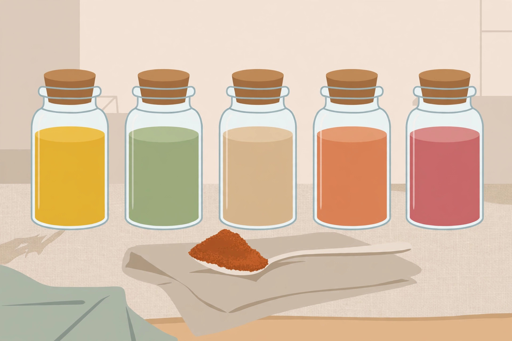

Spice blends to rescue bland pantry meals

Pantry food has a reputation problem, and it is mostly a seasoning problem. Rice, beans, lentils, eggs, and pasta are neutral by design — they are waiting for someone to tell them what dinner is. A store-bought seasoning packet does that in one tear, but packets run out, and the single jars behind them usually do not. Five blends, mixed in minutes from common single spices, cover nearly every bland cupboard meal — and unlike a packet, a blend you mixed yourself can be adjusted: more heat, less salt, no sugar, exactly your house's version. Each blend below is paired with the dish it rescues, because the right blend on the wrong food is just a different kind of bland.
Why pantry meals taste bland: three causes
Before mixing anything, diagnose. Cause one: the spices are faded. Consumer Reports, citing USDA ranges, puts whole spices at roughly two to four years and ground spices at two to three years before flavor fades — and notes the honest test: if you cannot smell a spice, it has lost its freshness. Faded spices do not become unsafe; they become pointless. Cause two: the seasoning went in all at once, late. Dried blends need fat and a minute of heat to wake up (the bloom, below), and salt added only at the table seasons the surface, not the dish. Cause three: nothing acidic at the end. A few drops of vinegar or lemon juice will not fix everything, but bland food that is properly salted and still dull is almost always missing acid.
The five blends at a glance
| Blend | Character | Rescues | Use |
|---|---|---|---|
| Taco-style | Warm, earthy, mild heat | Beans, rice, lentils | About 2 tablespoons per can of beans |
| Italian herb | Green, savory | Pasta, tomato dishes, white beans | About 1 tablespoon per pot |
| Smoky all-purpose | Smoky, garlicky | Eggs, potatoes, rice | About 1 teaspoon per serving |
| Curry-style | Golden, warming | Lentils, chickpeas, coconut dishes | About 1 tablespoon per pot |
| Everything-style seed | Crunchy, salty, garlicky | Eggs, rice bowls, plain noodles | Sprinkle at the table |
All ratios below are level spoonfuls, mixed in a dry jar and shaken hard. Each batch makes a small jar — roughly a quarter to a third of a cup.
Blend 1: taco-style, for beans and rice
- Combine 2 tablespoons chili powder, 1 tablespoon ground cumin, 1 teaspoon smoked or regular paprika, 1 teaspoon garlic powder, 1 teaspoon onion powder, half a teaspoon dried oregano, and half a teaspoon salt.
- Add a quarter teaspoon of cayenne or chili flakes if your house likes heat; leave it out and add hot sauce at the table if it does not.
- To use: bloom 2 tablespoons in a little oil, add a drained can of beans and a splash of water, and simmer 5 minutes. The water matters — it carries the spices into a sauce instead of leaving them as dust on the beans.
What success looks like: beans in a thin, brick-red sauce that tastes warm and earthy, seasoned through, with no raw chili-powder harshness — the bloom and the simmer are what remove it.
Blend 2: Italian herb, for pasta and white beans
- Combine 1 tablespoon each of dried basil, dried oregano, and dried parsley, 1 teaspoon dried thyme, 1 teaspoon garlic powder, half a teaspoon onion powder, and half a teaspoon salt.
- Crush the mixture lightly between your palms or in the jar with the back of a spoon — breaking up the leafy herbs releases more aroma.
- To use: stir a tablespoon into tomato sauce in the last 10 minutes, or bloom it in olive oil for white beans and pasta. Unlike the taco blend, this one is gentle enough to add late; long simmering dulls the green herbs.
Blend 3: smoky all-purpose, for eggs and potatoes
- Combine 1 tablespoon smoked paprika, 1 tablespoon garlic powder, 1 teaspoon onion powder, 1 teaspoon black pepper, and 1 teaspoon salt.
- This is the jar to reach for when food is cooked but uninteresting: scrambled eggs, fried potatoes, plain rice, roasted anything.
- Sprinkle it on near the end of cooking or at the table — smoked paprika burns bitter if it sits in a ripping-hot dry pan, so it goes on food, not into empty hot oil.
Blend 4: curry-style, for lentils and chickpeas
- Combine 1 tablespoon ground turmeric, 1 tablespoon ground cumin, 1 tablespoon ground coriander if you have it (double the cumin if not), 1 teaspoon ground ginger, 1 teaspoon garlic powder, half a teaspoon cinnamon, and chili flakes to taste.
- Always bloom this blend: a minute in oil or butter at the start of cooking, until it smells fragrant and the color deepens. Raw curry-style spices taste dusty and harsh; bloomed, they taste like dinner.
- Finish lentil and chickpea dishes with something acidic and, if the cupboard has it, coconut milk stirred in off the heat.
What success looks like: the oil in the pan turns golden, the spices smell warm rather than medicinal, and the finished dish reads as one flavor instead of a list of powders.
Blend 5: everything-style seed blend, for bowls and noodles
- Combine 1 tablespoon sesame seeds, 1 tablespoon poppy seeds if you keep them, 1 teaspoon garlic flakes or powder, 1 teaspoon onion flakes or powder, and 1 teaspoon flaky or coarse salt.
- This is a finishing blend, not a cooking one: the seeds burn fast and the crunch is the point. It goes on at the table, over eggs, rice bowls, buttered noodles, or avocado toast when there is avocado.
- Make small batches — seed blends stale faster than the ground-spice blends once the jar keeps opening.
Using blends well: bloom, layer, finish
Three habits make any blend taste twice as strong without adding more of it. Bloom: cook ground spice blends in a spoonful of oil for about a minute before liquid goes in; fat carries flavor compounds that water cannot. Layer: some blend early (for depth), some at the end (for aroma) — half now, half later beats all at either moment. Finish: acid and salt at the end, in that order of checking. And one storage habit that quietly ruins blends: never sprinkle from the jar directly over a steaming pot. University of Georgia Extension warns against it because the steam carries moisture back into the container; measure into a spoon or your palm instead.
Storing blends so they stay potent
Store blends in small, tightly covered jars in a dark cupboard away from the stove, dishwasher, and sink — heat, light, air, and moisture are the four things that fade them. Label every jar with the blend name and the date mixed; memory is not a labeling system. On freshness windows, extension sources vary a little: University of Georgia Extension puts herbs and ground spices at up to about one year for best flavor and whole spices up to two, while Texas A&M AgriLife Extension gives longer ranges — whole spices three to four years, ground spices two to four, and leafy herbs and most seasoning blends one to three. The practical reading for a home cupboard: a blend is a ground-spice product, so plan on its best year, do the sniff test before blaming a recipe, and mix small batches you will actually finish.
FAQ
Are old spices dangerous? No — the guidance from both Consumer Reports and the extension services is that dried herbs and spices lose aroma and flavor with age rather than becoming unsafe. They fail as seasoning, not as food safety hazards; cook leftovers they season under the usual rules — refrigerate within two hours, use within about four days, reheat to 165°F.
Should blends contain salt? A little, as above, keeps them grab-and-go simple. If you cook for different salt needs, mix salt-free and salt the dish separately — the blends all work that way too.
What if a jar is missing? Substitute by family: paprika and smoked paprika trade places, thyme and oregano cover for each other, and coriander can be skipped by doubling the cumin. A blend is a pattern, not a prescription.